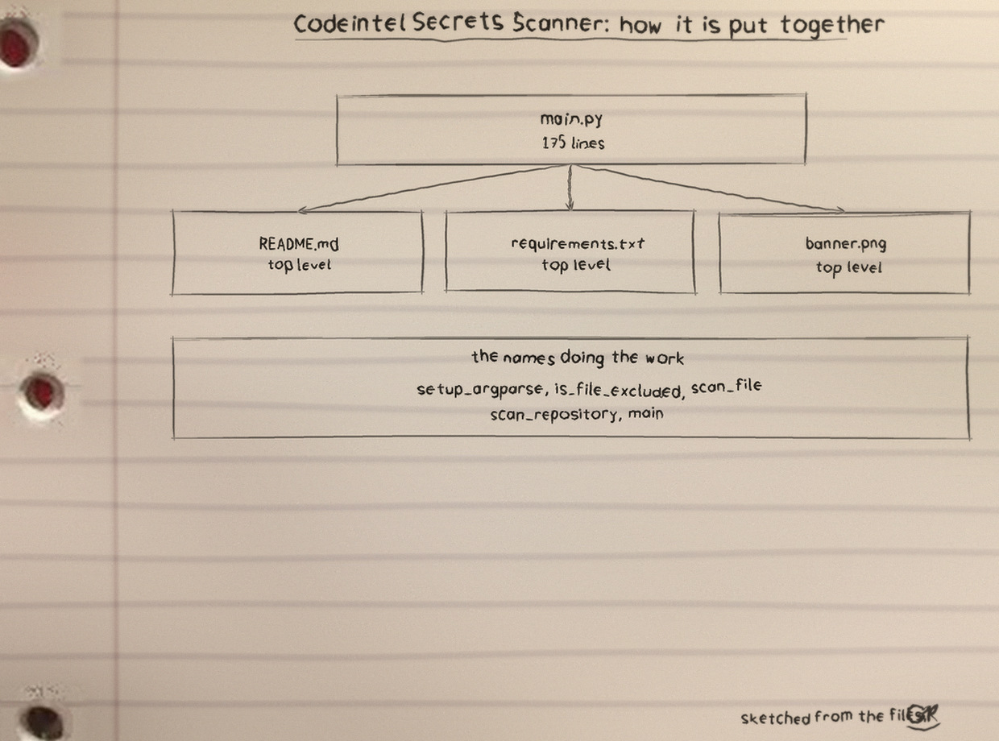
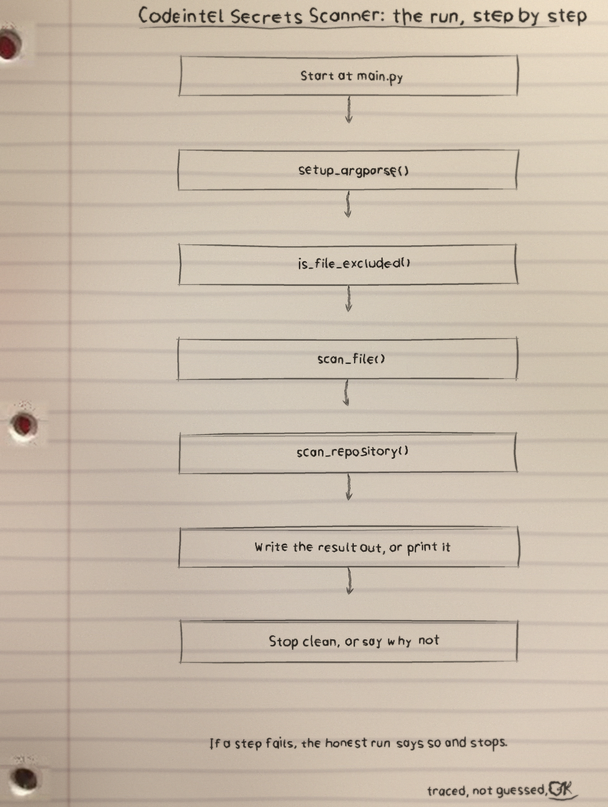
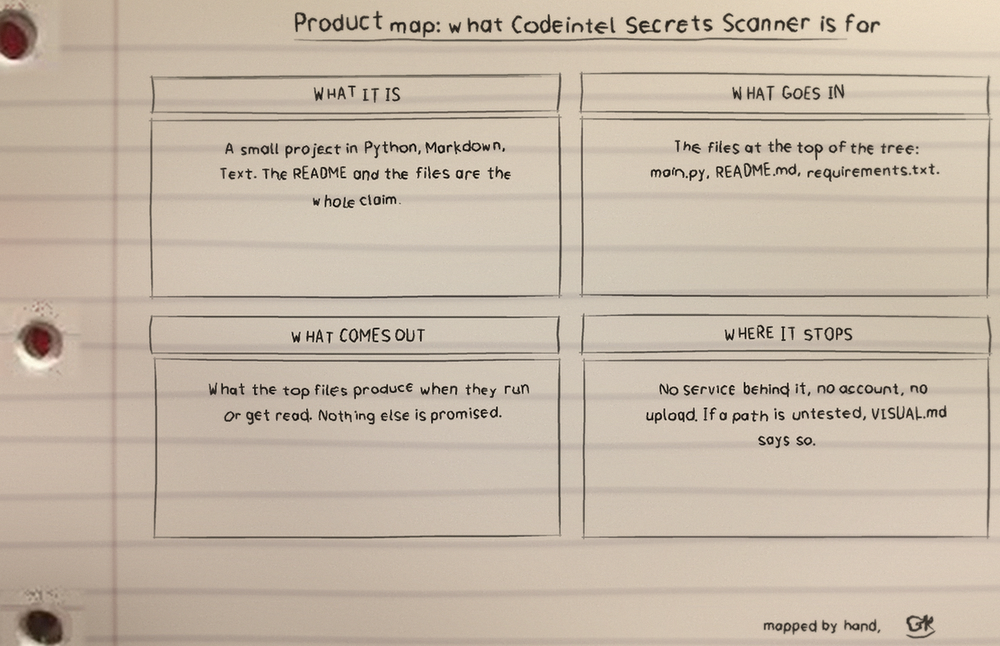

This tool scans a repository line by line for four secret shapes. Run it as python3 main.py REPOSITORY_PATH; the positional must be a valid directory (anything else exits 1 with a logged error). Options: -p naming patterns, -e taking exclusion globs, -v for verbose, -r for recursion, and -o writing results to a file.
The four default patterns are an API key shape of 32 to 45 word characters, the bare words password, pwd or secret, the AWS access key shape AKIA plus sixteen characters, and an AWS secret shape that is any run of forty characters from its alphabet, a shape that also matches hashes and long identifiers that are not secrets at all, so every hit under that name must be judged by hand. Only the first match of each pattern on a line is recorded.
What is reported is masked: the matched span is replaced with ***, and any value after an equals or colon sign on the same line is masked as well, while the rest of the line, the file, the pattern name and the line number still stand. A -p name that is not one of the four is treated as a custom regular expression itself, compiled once before the scan begins; exclusions match as globs against the full path and against the bare file name. Without -r only the top level of the directory is scanned. Findings never move the exit code: a scan that found secrets exits 0 exactly like a clean one, so the output text is the only signal a caller gets.
Recorded traps, preserved in the README: the clone URL names the stale ShadowStrikeHQ org; the usage line is a placeholder naming no repository path; the parameter list omits the required positional repository_path and leaves -p and -e undescribed though the code's help text describes both; and the closing licence line reads Copyright (c) ShadowStrikeHQ while the LICENSE file is MIT.

Diagrams


